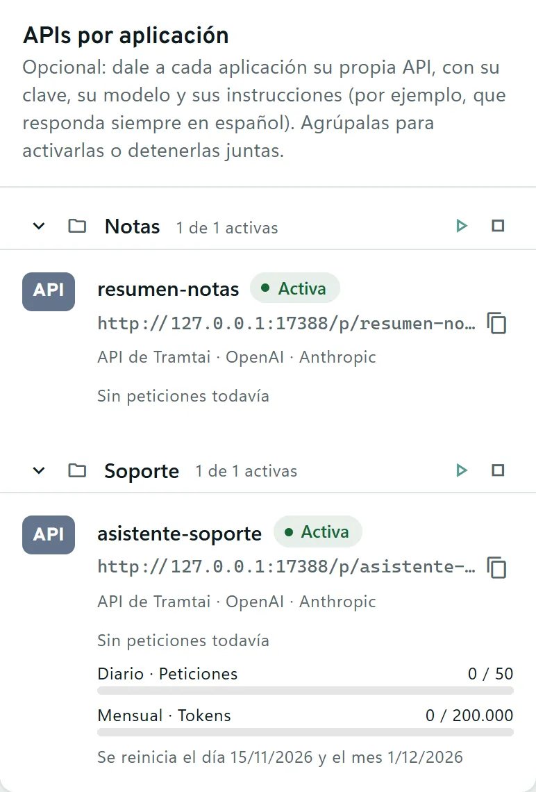
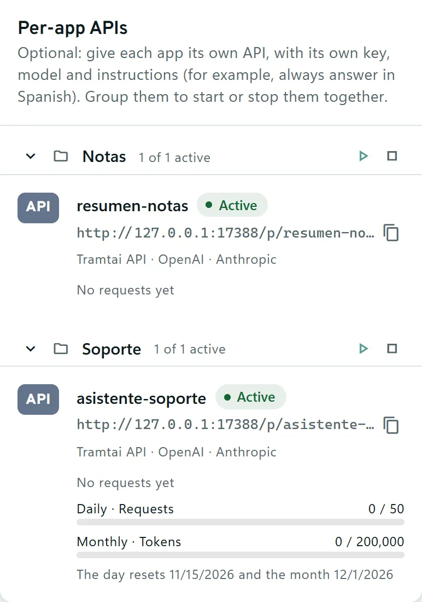
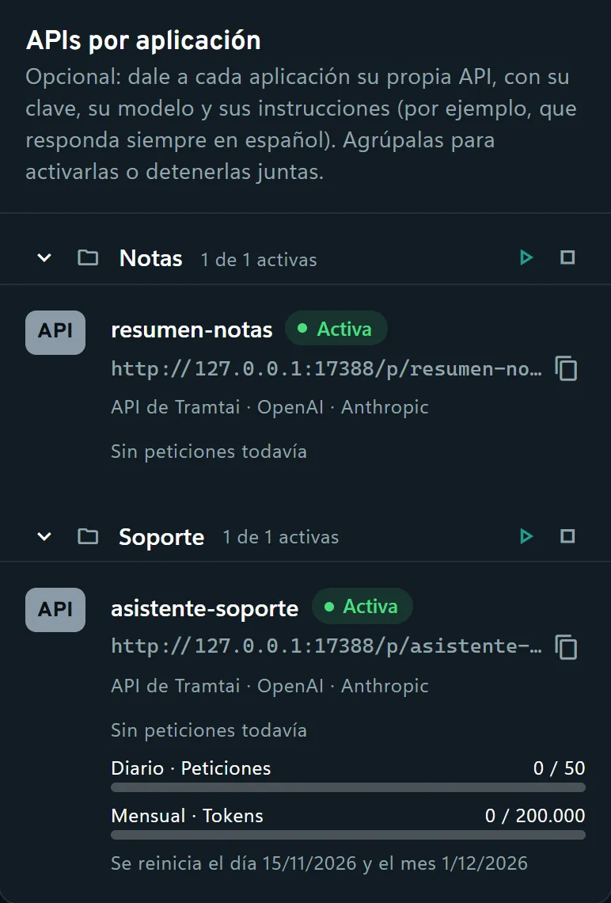
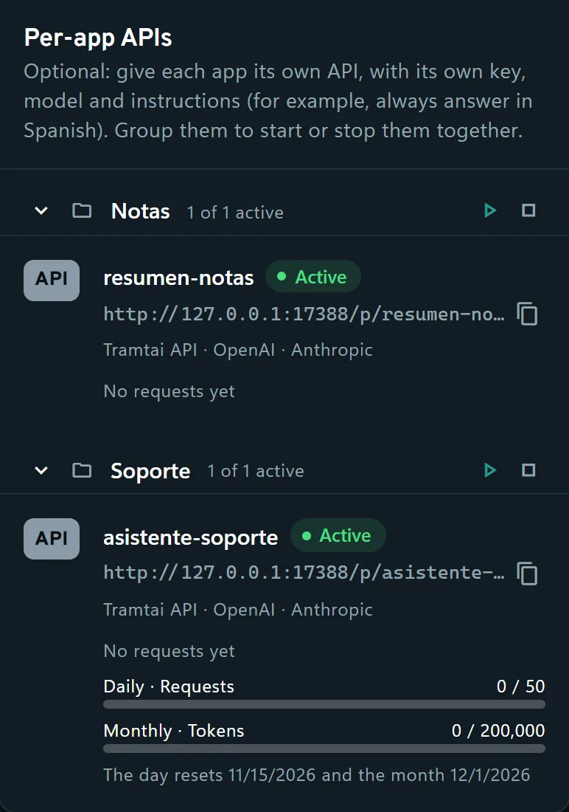
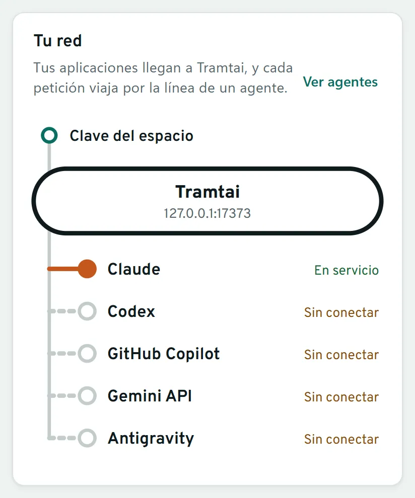
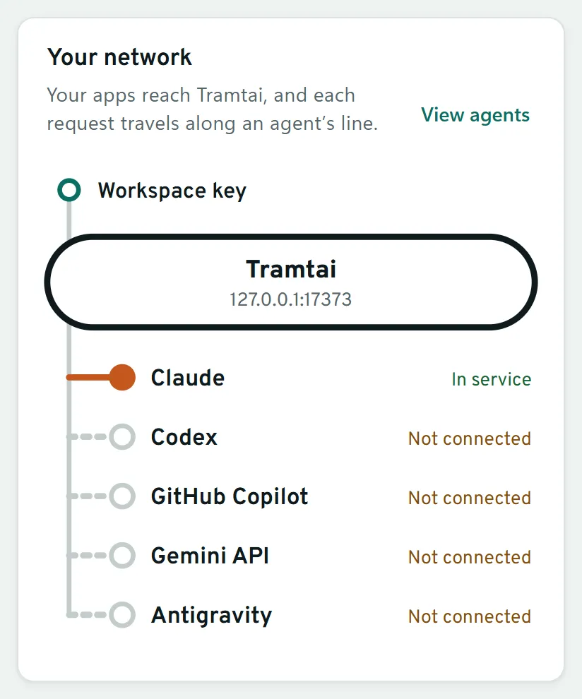
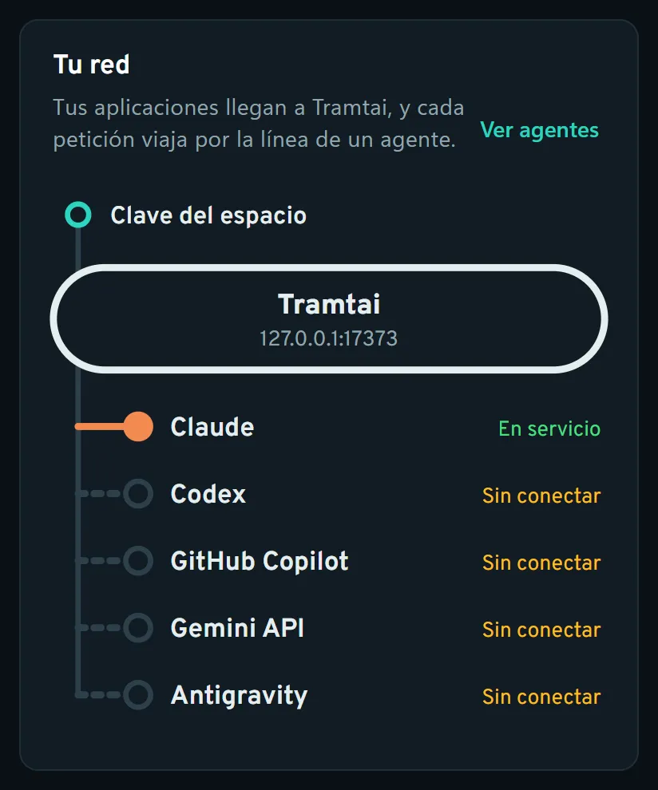
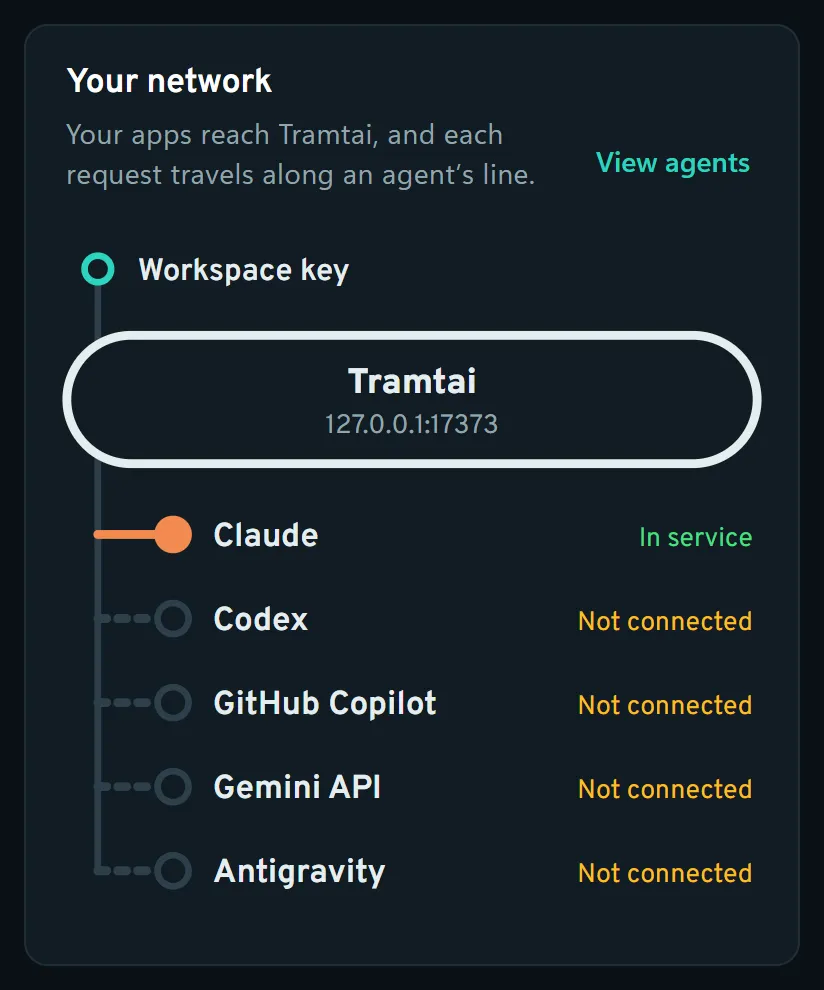

Tus agentes de IA,
como una API local.Your AI agents,
as a local API.
Tramtai convierte Claude Code, Codex, GitHub Copilot CLI y la Gemini API en una API compatible con OpenAI y Anthropic que funciona en tu equipo. Si tu app ya usa el SDK de OpenAI o el de Anthropic, solo cambias la URL y la clave.Tramtai turns Claude Code, Codex, GitHub Copilot CLI and the Gemini API into an OpenAI- and Anthropic-compatible API that runs on your computer. If your app already uses the OpenAI or Anthropic SDK, you only change the URL and the key.
macOS 11+ · Homebrew
brew tap mscottb/tramtai https://github.com/MscottB/Tramtai
brew install --cask tramtaiO el .dmg, para Intel y Apple Silicon.Or the .dmg, for Intel and Apple Silicon.
Windows 10 · 11
Descargar el instaladorDownload the installer: es para tu usuario y no pide permisos de administrador.: it’s per user and needs no administrator rights.
Windows 10 y 11, macOS 11 o posterior y Linux · gratis para uso personal y no comercialWindows 10 and 11, macOS 11 or later and Linux · free for personal and non-commercial use
Tramtai en cinco figurasTramtai in five figures
# app.py - base_url="https://api.openai.com/v1" + base_url="http://127.0.0.1:17373/openai/v1" $ tramtai servicio iniciartramtai service start ✓ en marcha enrunning on 127.0.0.1:17373 200 ● claude/sonnet 1,8 s1.8 s 200 ● codex/gpt-5.5 2,4 s2.4 s 200 ● claude/haiku 0,9 s0.9 s 200 ● copilot/auto 3,1 s3.1 s
Si tu app usa el SDK de OpenAI o el de Anthropic, no cambia nada más: el agente y el modelo van en model. Ejemplos en Python, JavaScript, Go y curlIf your app uses the OpenAI or Anthropic SDK, nothing else changes: the agent and model go in model. Examples in Python, JavaScript, Go and curl
- Claude Code listoready
- Codex listoready
- GitHub Copilot ↑ versión nuevaupdate available
- Gemini API listoready
- Antigravity sin instalarnot installed
Tramtai instala cada CLI, te ayuda a iniciar sesión y lo mantiene al día.Tramtai installs each CLI, helps you sign in and keeps it up to date.








FIG 1 y FIG 3 llevan datos de ejemplo. Las capturas son de una Tramtai de prueba en el puerto 17388, salvo FIG 5, la del servidor, que usa el 17373 de siempre; la tuya usa el 17373 si no lo cambias, como el código.FIG 1 and FIG 3 show sample data. The screenshots come from a test copy of Tramtai on port 17388, except FIG 5, the server one, which uses the usual 17373; yours uses 17373 unless you change it, like the code.
Una app, cuatro formas de usarla.One app, four ways to use it.
Los mismos espacios, APIs y peticiones, desde donde te venga mejor.The same workspaces, APIs and requests, from wherever suits you.
Web UI
En el navegador o en la app de escritorio, con su icono en la bandeja: el mapa en vivo, tus APIs con su clave y su presupuesto, Probar y el Historial.In your browser or the desktop app, with its tray icon: the live map, your APIs with their key and budget, the Playground and History.


Terminal
tramtai terminal tiene las ocho páginas de la app, con el teclado: sirve sin abrir la app y por SSH al equipo donde corre Tramtai.tramtai terminal has the app’s eight pages, from the keyboard: it works without opening the app and over SSH to the computer where Tramtai runs.
Solo con la terminal, paso a pasoTerminal only, step by step
Tramtai Inicio Global · ● En marcha
Empezar │ Tus apps se conectan a http://127.0.0.1:17388
▸ 1 Inicio │ Red de Tramtai: 3 orígenes y 1 de 5 agentes en servicio.
2 Agentes │
3 Probar │ Tu red
│ Tus aplicaciones llegan a Tramtai, y cada petición viaja por la línea de un
Usar │ agente.
4 Mis APIs │ g Ver agentes
5 Historial │
│ Salidas · los últimos 7 días
Organizar │ ✓ o Completadas respondidas correctamente 2
6 Espacios │ ● e En curso en cola o ejecutándose ahora 0
7 Ajustes │ ✗ f Con error fallaron o se interrumpieron 0
│
? Ayuda │ Primeros pasos · 3 de 4 pasos hechos · es opcional
│ ✓ Conecta al menos un agente · 2 Agentes
│ 1 de 5 agentes listos
│ ✓ Prueba un agente · 3 Probar
│ Escribe un mensaje y mira la respuesta en vivo
│ ✓ Conecta tu aplicación · 4 Mis APIs
│ Cualquier app compatible con OpenAI o Anthropic, con la URL y la clave de M…
│ ○ Arranca Tramtai con Windows · 7 Ajustes
│ Tus apps funcionan al encender el equipo
│ a Ver la Ayuda de Empezar
│
│ ↑↓ 24/30
Este equipo
↑↓ desplaza · g Ver agentes · h Ver historial · a Ayuda · Ctrl+E esp… Tab menú · ? ayuda · q salir
Tramtai Home Global · ● Running
Get started │ Your apps connect to http://127.0.0.1:17388
▸ 1 Home │ Tramtai network: 3 sources and 1 of 5 agents in service.
2 Agents │
3 Playground │ Your network
│ Your apps reach Tramtai, and each request travels along an agent’s line.
Use │ g View agents
4 My APIs │
5 History │ Departures · the last 7 days
│ ✓ o Completed answered successfully 2
Organize │ ● e In progress queued or running now 0
6 Workspaces │ ✗ f With errors failed or were interrupted 0
7 Settings │
│ Getting started · 3 of 4 steps done · optional
? Help │ ✓ Connect at least one agent · 2 Agents
│ 1 of 5 agents ready
│ ✓ Try an agent · 3 Playground
│ Write a message and watch the response live
│ ✓ Connect your app · 4 My APIs
│ Any OpenAI- or Anthropic-compatible app, with the URL and key from My APIs
│ ○ Start Tramtai with Windows · 7 Settings
│ Your apps work as soon as the computer starts
│ a See the Get started Help
│
│ Recent requests
│ ↑↓ 24/29
This device
↑↓ scroll · g View agents · h View history · a Help · Ctrl+E workspace… Tab menu · ? help · q quit
4 Mis APIsMy APIs
Tramtai Mis APIs Global · ● En marcha
Empezar │ [APIs por aplicación (2)] Clave del espacio Herramientas
1 Inicio │ Tus aplicaciones usan tus agentes a través de estas APIs: cambia la URL base …
2 Agentes │ ▸ ▾ Notas (1)
3 Probar │ resumen-notas ● Activa Sin peticiones todavía
│ ▾ Soporte (1)
Usar │ asistente-soporte ● Activa ░░░░░░░░ 0 % Sin peticiones todavía
▸ 4 Mis APIs │
5 Historial │
│
Organizar │
6 Espacios │
7 Ajustes │
│
? Ayuda │
│
│
│
│
│
│
│
│
│
│
│
Este equipo
Enter detalles · ← → pestañas · / busca · f filtros · n Nueva API · … Tab menú · ? ayuda · q salir
Tramtai My APIs Global · ● Running
Get started │ [Per-app APIs (2)] Workspace key Tools
1 Home │ Your apps use your agents through these APIs: change your app’s base URL and …
2 Agents │ ▸ ▾ Notas (1)
3 Playground │ resumen-notas ● Active No requests yet
│ ▾ Soporte (1)
Use │ asistente-soporte ● Active ░░░░░░░░ 0 % No requests yet
▸ 4 My APIs │
5 History │
│
Organize │
6 Workspaces │
7 Settings │
│
? Help │
│
│
│
│
│
│
│
│
│
│
│
This device
Enter details · ← → tabs · / search · f filters · n New API · g start … Tab menu · ? help · q quit
5 HistorialHistory
Tramtai Historial Global · ● En marcha
Empezar │ Estado: Todas · Origen: Todos los orígenes
1 Inicio │ ▸ ✓ Completado Di «hola» en tres idiomas. hace 29 s
2 Agentes │ ✓ Completado Resume en una línea: Tramtai pone agentes de IA d… hace 35 s
3 Probar │ Mostrando las 2 más recientes
│
Usar │
4 Mis APIs │
▸ 5 Historial │
│
Organizar │
6 Espacios │
7 Ajustes │
│
? Ayuda │
│
│
│
│
│
│
│
│
│
│
│
Este equipo
Enter detalles · / busca · e Estado · f Origen · t Reintentar · x El… Tab menú · ? ayuda · q salir
Tramtai History Global · ● Running
Get started │ Status: All · Source: All sources
1 Home │ ▸ ✓ Completed Say hello in three languages. 33 s ago
2 Agents │ ✓ Completed Summarize in one line: Tramtai puts AI agents beh… 38 s ago
3 Playground │ Showing the 2 most recent
│
Use │
4 My APIs │
▸ 5 History │
│
Organize │
6 Workspaces │
7 Settings │
│
? Help │
│
│
│
│
│
│
│
│
│
│
│
This device
Enter details · / search · e Status · f Source · t Retry · x Delete · … Tab menu · ? help · q quit
Inicio, Mis APIs e Historial de una Tramtai de prueba, con datos de ejemplo y en el puerto 17388; la tuya usa el 17373.Home, My APIs and History from a test copy of Tramtai, with sample data and on port 17388; yours uses 17373.
CLI
Para tus scripts: el servicio, los agentes, las herramientas y los espacios, cada uno con sus órdenes.For your scripts: the service, the agents, the tools and the workspaces, each with its commands.
# El servicio en segundo plano, sin abrir la app# The service in the background, without the app tramtai servicio iniciar -dtramtai service start -d # Cada agente: versión, sesión y términos, sin gastar cuota# Each agent: version, sign-in and terms, without using quota tramtai agentestramtai agents # Claude Code, Codex y las demás herramientas, apuntadas a Tramtai# Claude Code, Codex and the other tools, pointed at Tramtai tramtai herramientas activar --todastramtai tools enable --all # El servicio, sus espacios y su puerto# The service, its workspaces and its port tramtai servicio estadotramtai service status # Tus espacios: activos, detenidos y no encontrados# Your workspaces: active, stopped and not found tramtai espaciostramtai workspaces # Las ocho páginas de la app, con el teclado; q sale# The app’s eight pages, from the keyboard; q quits tramtai terminal
ServidorServer
Tramtai en un servidor Linux o Windows Server, en marcha aunque apagues tu equipo, con la Web UI por HTTPS, contraseña y TOTP. Es otro entorno: tus APIs y claves no pasan de uno a otro.Tramtai on a Linux or Windows Server machine, running while your computer is off, with the Web UI over HTTPS, a password and TOTP. It’s a separate environment: your APIs and keys don’t carry over.
La guía del servidorThe server guide · Los cinco riesgos, antes de instalarThe five risks, before installing


Sigue por aquí.Keep going.
ProductoProduct
Cómo funciona, qué hace, por qué Tramtai y qué datos salen de tu equipo.How it works, what it does, why Tramtai and which data leaves your computer.
AgentesAgents
Claude Code, Codex, GitHub Copilot, Gemini API y Antigravity, y cómo los prepara Tramtai.Claude Code, Codex, GitHub Copilot, Gemini API and Antigravity, and how Tramtai sets them up.
ServidorServer
Tramtai en tu servidor, con la Web UI por HTTPS, contraseña y TOTP.Tramtai on your server, with the Web UI over HTTPS, a password and TOTP.
DesarrolladoresDevelopers
El ciclo completo en Python, JavaScript, Go y curl, y la especificación OpenAPI.The full cycle in Python, JavaScript, Go and curl, and the OpenAPI spec.
AyudaHelp
Cada función, paso a paso, y qué hacer si algo falla. Con buscador.Every feature, step by step, and what to do if something fails. With search.
DescargarDownload
Windows, macOS y Linux: instalador, paquetes, CLI y servidor, con sus sumas SHA-256.Windows, macOS and Linux: installer, packages, CLI and server, with their SHA-256 checksums.